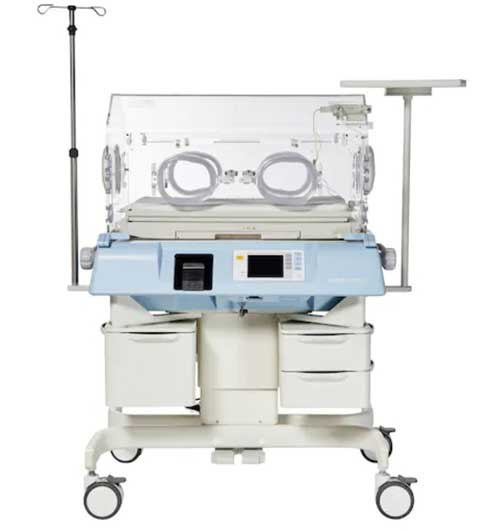
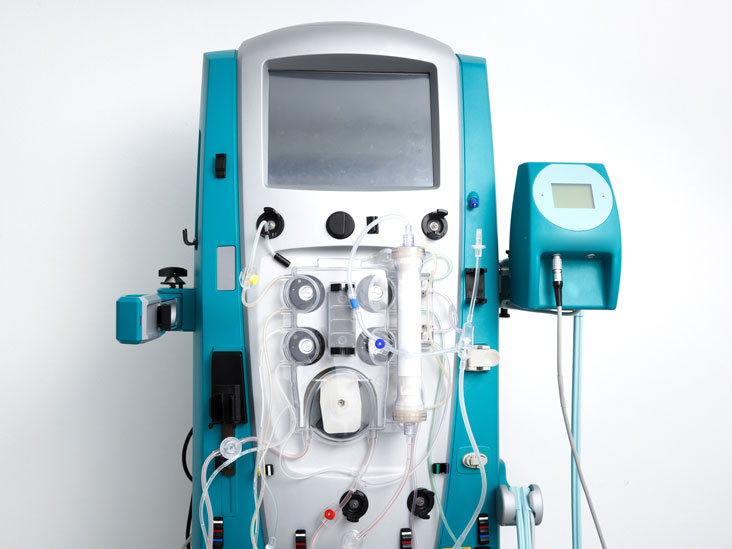
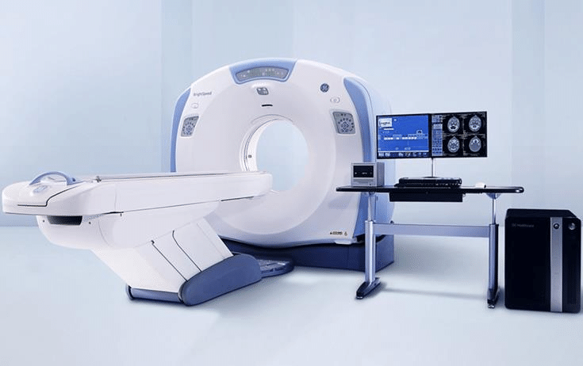
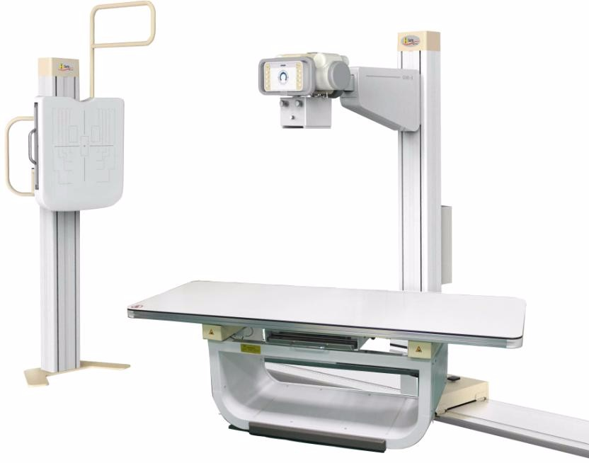

Medical Incubator
Creator: Dr. Stephane Tarnie
Is used for a newborn child who can be seen and cared for in a controlled setting. A heater, fan, a container for water to provide humidity inside, a control valve via which oxygen may be introduced, and access ports for nursing care are all included in the device.
See more

Dialysis Machine
Creator: Willem Johan Kolff
The hemodialysis machine uses a pump to slowly take blood out of your body and put it via a dialyzer. It functions similarly to a kidney, filtering excess salt, waste, and fluid. Through the second needle in your arm, the cleansed blood is reintroduced into your body. This is used for patients who have kidney failures.
See more

CT (Computerized Tomography) Scan
Creator: Godfrey Hounsfield
A scan that combines a sequence of X-ray pictures taken from various angles around your body with computer processing to produce cross-sectional images (slices) of the bones, blood arteries, and soft tissues within your body. CT scan pictures include more information than standard X-rays.
See more

X-ray
Creator: Wilhelm Roentgen
Is a machine that is used to obtain images of dense tissues such as bones and teeth because X-rays are extremely penetrating, ionizing radiation. This is due to the fact that bones absorb more radiation than less dense soft tissue. X-rays from a source are projected onto a photographic cassette after passing through the body.
See more